| 1 |
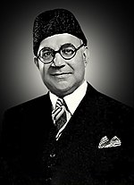 |
Liaquat Ali Khan |
14 August 1947 |
16 October 1951
(assassinated) |
4 Years,
2 Months,
2 Days, |
Muslim League |
| 2 |
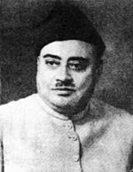 |
Sir Khawaja Nazimuddin |
17 October 1951 |
17 April 1953 |
1 Year,
6 Months, |
Muslim League |
| 3 |
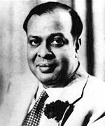 |
Mohammad Ali Bogra |
17 April 1953 |
12 August 1955 |
2 Years,
3 Months,
26 Days, |
Muslim League |
| 4 |
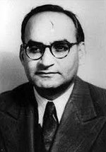 |
Chaudhry Mohammad Ali |
12 August 1955 |
12 September 1956 |
1 Year,
1 Month, |
Muslim League |
| 5 |
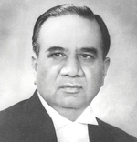 |
Huseyn Shaheed Suhrawardy |
12 September 1956 |
17 October 1957
|
1 Year,
1 Month,
5 Days, |
Awami League |
| 6 |
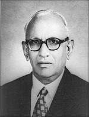 |
Ibrahim Ismail Chundrigar |
17 October 1957 |
16 December 1957 |
1 Month,
29 Days |
Muslim League |
| 7 |
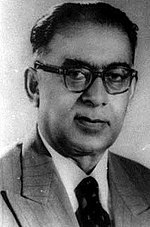 |
Sir Feroze Khan Noon |
16 December 1957 |
7 October 1958 |
9 Months,
21 Days |
Republican Party |
| 8 |
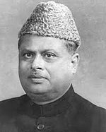 |
Nurul Amin |
7 December 1971 |
20 December 1971 |
13 Days, |
Pakistan Muslim League |
| 9 |
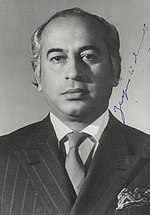 |
Zulfikar Ali Bhutto |
14 August 1973 |
5 July 1977 |
3 Years,
10 Months,
21 Days, |
Pakistan Peoples Party |
| 10 |
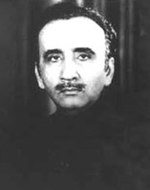 |
Muhammad Khan Junejo |
24 March 1985 |
29 May 1988 |
3 Years,
2 Months,
5 Days, |
Independent |
| 11 |
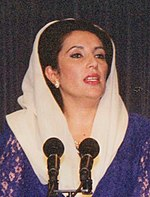 |
Benazir Bhutto |
2 December 1988 |
6 August 1990 |
1 Year,
8 Months,
4 Days, |
Pakistan Peoples Party |
| 12 |
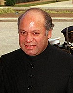 |
Nawaz Sharif |
6 November 1990 |
18 July 1993 |
2 Years,
7 Months,
4 Days, |
Pakistan Muslim League (N) |
| 13 |
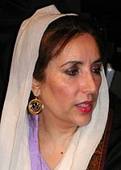 |
Benazir Bhutto |
19 October 1993 |
5 November 1996 |
3 Years,
17 Days, |
Pakistan Peoples Party |
| 14 |
|
Nawaz Sharif |
17 February 1997 |
12 October 1999 |
2 Years,
7 Months,
25 Days. |
Pakistan Muslim League (N) |
| 15 |
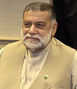 |
Mir Zafarullah Khan Jamali |
23 November 2002 |
26 June 2004 |
1 Year,
7 Months,
3 Days, |
Pakistan Muslim League (Q) |
| 16 |
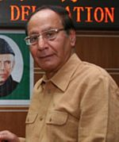 |
Chaudhry Shujaat Hussain |
30 June 2004 |
26 August 2004 |
1 Month,
27 Days, |
Pakistan Muslim League (Q) |
| 17 |
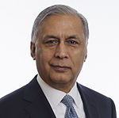 |
Shaukat Aziz |
28 August 2004 |
15 November 2007 |
3 Years,
2 Months,
18 Days, |
Pakistan Muslim League (Q) |
| 18 |
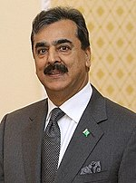 |
Yousaf Raza Gillani |
25 March 2008 |
19 June 2012 |
4 Years,
2 Months,
25 Days |
Pakistan Peoples Party |
| 19 |
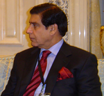 |
Raja Pervaiz Ashraf |
22 June 2012 |
24 March 2013 |
9 Months,
2 Days, |
Pakistan Peoples Party |
| 20 |
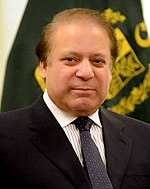 |
Nawaz Sharif |
5 June 2013 |
28 July 2017 |
4 Years,
1 Month,
23 Days, |
Pakistan Muslim League (N) |
| 21 |
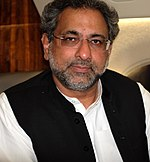 |
Shahid Khaqan Abbasi |
1 August 2017 |
31 May 2018 |
10 months |
Pakistan Muslim League (N) |
22 |
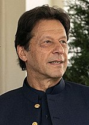 |
Imran Khan |
18 August 2018 |
Incumbent |
3 years, 9 days |
Pakistan Tehreek-e-Insaf |